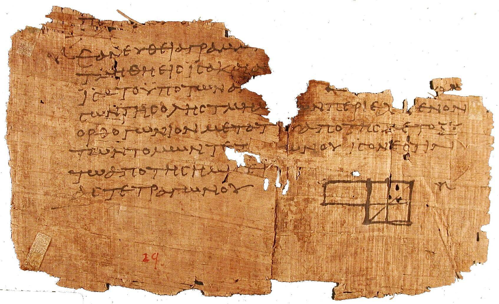

bktOpen I.1
bktOpen I.1The Library of Alexandria, rebuilt as a canon
Every proof in order
Bucket keeps the foundations the geometers and polymaths wrote down, set in their own letters, with the source for every line.

Proposition I.1
Ἐπὶ τῆς δοθείσης εὐθείας πεπερασμένης τρίγωνον ἰσόπλευρον συστήσασθαι.
On a given finite straight line to construct an equilateral triangle. Heiberg's Greek, Heath's English.
Drawn in Byrne's red, yellow and blue after his 1847 plate.
Seven branches
One polymath at the door of each branch
- 01Mathematics
Euclid, Elements, c. 300 BC - 02Physics
Archimedes, On Floating Bodies - 03Chemistry
Zosimos of Panopolis, Cheirokmeta - 04Information
Eratosthenes, the sieve of primes - 05Biophysics
Herophilus, the pulse and the nerves - 06Cosmology
Aristarchus, On the Sizes and Distances - 07Mind
Hypatia, commentary on Diophantus

48-Sacred_law-3.JPG){kind=link}
Thirty-five languages
One word, the way each tradition wrote it. Polingual's baked subset carries 27 of the 35 languages in the full index.
- light
en - λόγος
el - אור
he - प्रकाश
sa - свет
ru - 光
ja
Words from Wiktionary via Kaikki, CC BY-SA.

Instruments
Read the sky with the tools that measured it
Hipparchus and Ptolemy set out the stereographic projection behind the astrolabe. The canon links each instrument to the proposition that makes it work.

Athens, tetradrachm, 86-84 BC, Weber 3526, Hermann Weber 1823-1918, Public domain